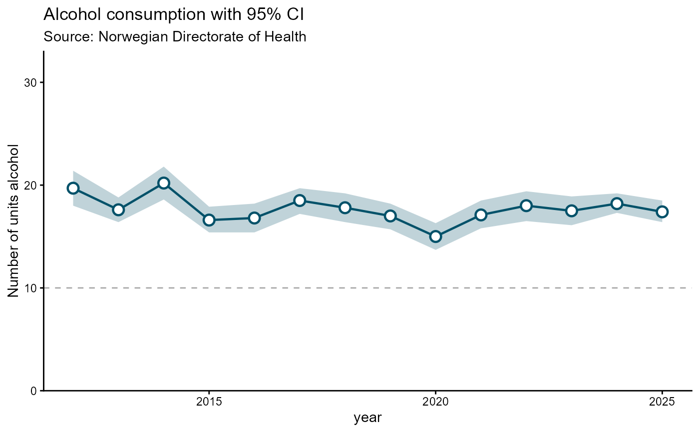

Geometry layer for ribbon / confidence-interval charts. Unlike the other
hd_geom_*() functions, ymin and ymax are required named arguments
(they map to column names in spec$data) rather than optional ... extras.
This makes the contract explicit at the call site instead of burying
required information inside ....
Examples
# Single series
spec_ar1 <- hd_spec(alco1,
x = "year",
y = "adj_enhet")
opts_ar <- hd_opts(
title = "Alcohol consumption with 95% CI",
subtitle = "Source: Norwegian Directorate of Health",
ylim = c(0, 30),
ylab = "Number of units alcohol"
)
hd_make(spec_ar1, "arearange", opts_ar,
ymin = "lower_enhet", ymax = "upper_enhet")
# Static ggplot2 version
hd_make(spec_ar1, "arearange", opts_ar,
ymin = "lower_enhet", ymax = "upper_enhet", backend = "ggplot2")
#> Scale for y is already present.
#> Adding another scale for y, which will replace the existing scale.

#' # Multi-series with group column
# Grouped by kjonn
spec_ar2 <- hd_spec(alco2,
x = "year",
y = "adj_enhet",
group = "kjonn")
hd_make(spec_ar2, "arearange", opts_ar,
ymin = "lower_enhet", ymax = "upper_enhet")